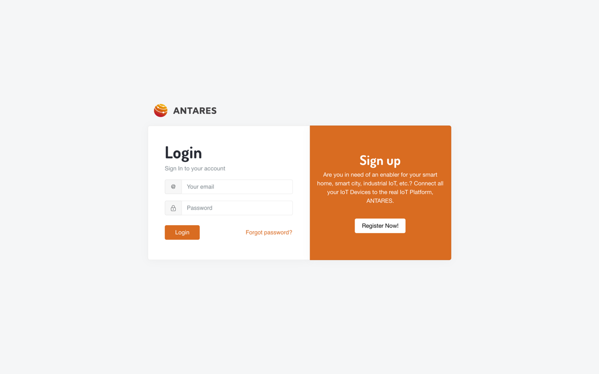
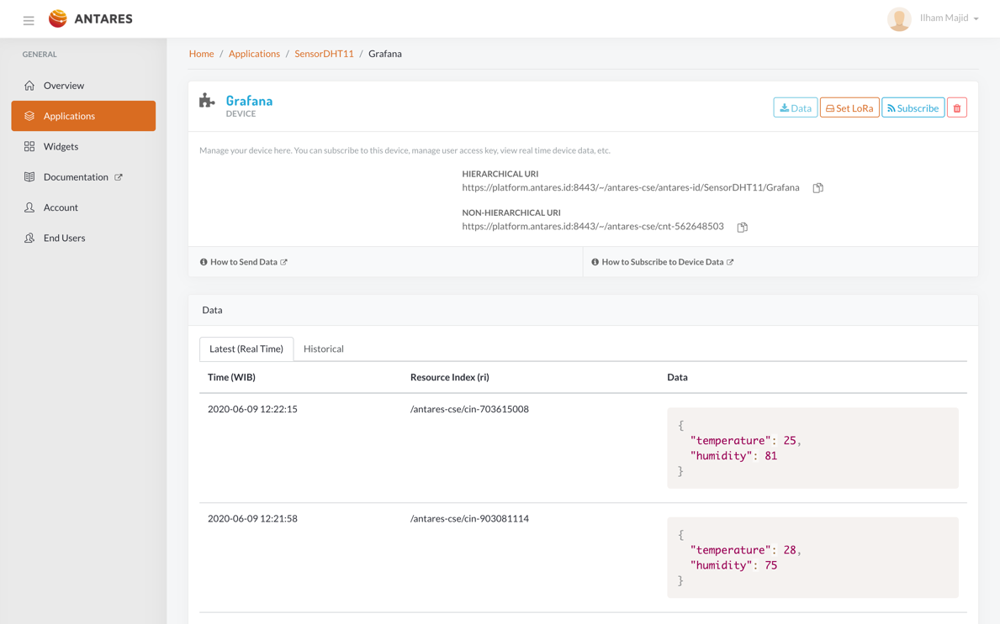
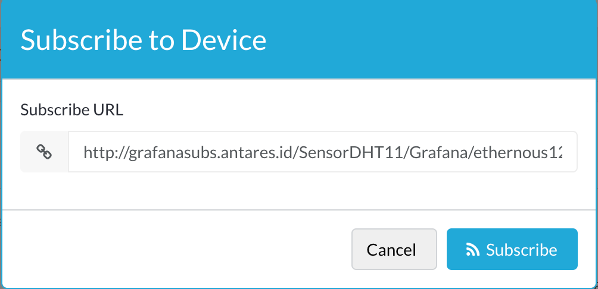
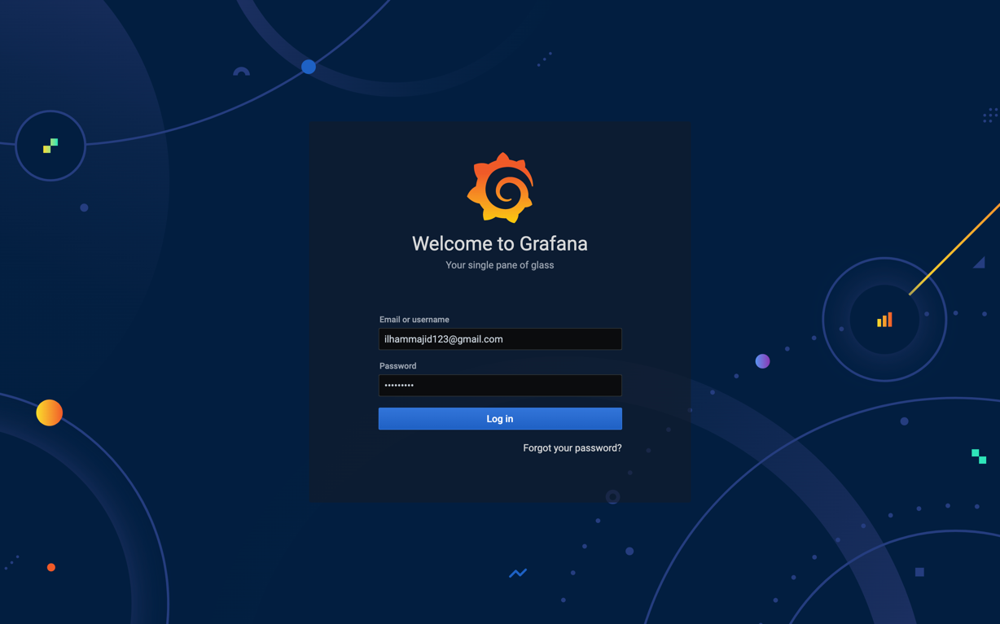
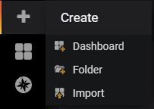
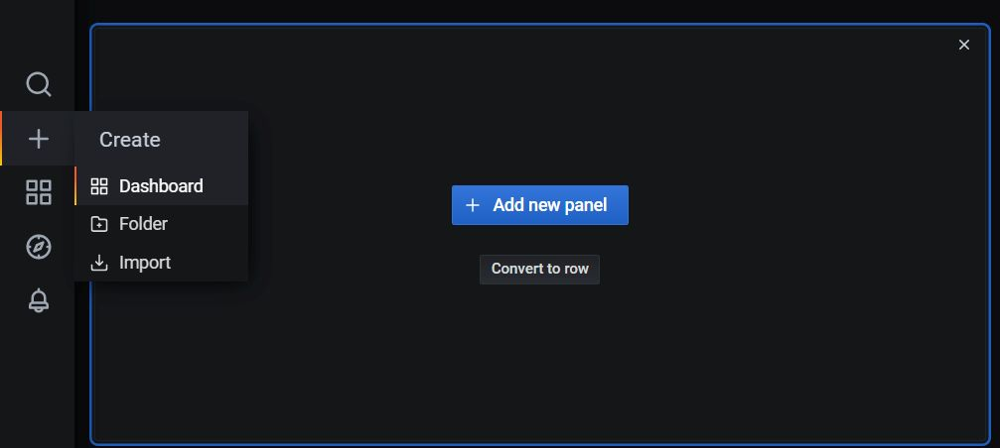
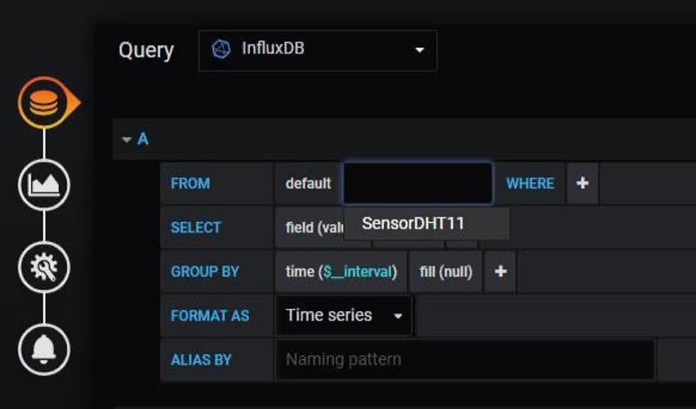
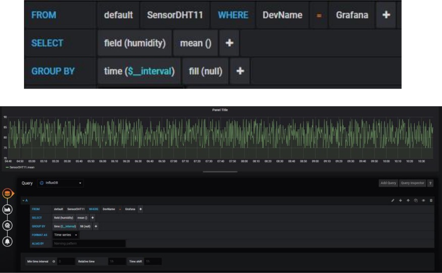
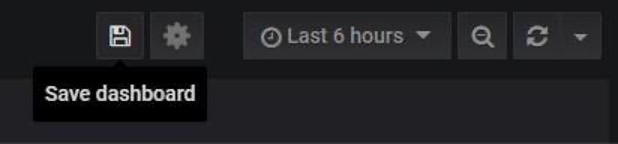
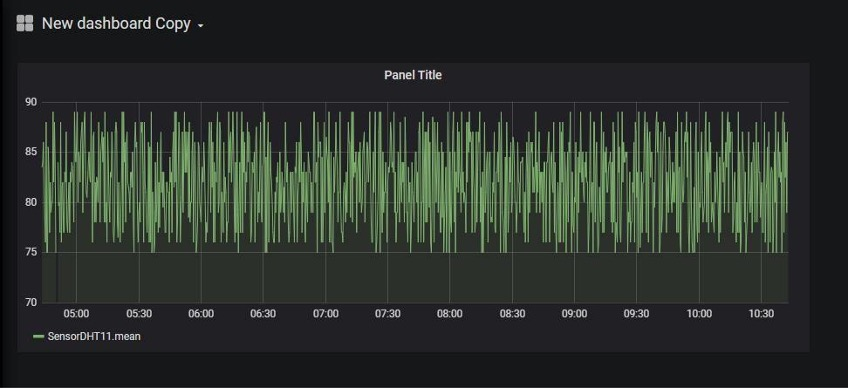

Dokumentasi ini akan menjelaskan kepada anda untuk menggunakan Grafana dan Antares. Jika membutuhkan informasi lebih lanjut, jangan ragu hubungi kami melalui support@antares.id
Pendahuluan
Dokumentasi ini akan menjelaskan kepada anda bagaimana menggunakan Grafana dan menghubungkannya dengan platform Antares.
Adapun hal-hal yang harus diperhatikan adalah sebagai berikut:
Sudah memiliki akun Antares dan memiliki perangkat yang aktif dalam menerima data
dari sensor, baik menggunakan WiFi/ Internet maupun jaringan LoRa.
Format data yang dikirim adalah JSON.
Bedakan URL untuk perangkat yang menggunakan WiFi/ Internet dengan LoRa.
Hak akses Grafana akan dikirim via email anda oleh admin Grafana X Antares,
setelah melakukan subscribe di website antares lalu melakukan registrasi di website
https://www.grafares.antares.id (harap mengikuti alur yang telah ditentukan).
Menggunakan Subscriber Antares
\

Silahkan login ke halaman https://console.antares.id lalu masukkan informasi yang
dibutuhkan

Setelah login pilihlah aplikasi yang ingin anda gunakan serta devicenya yang anda ingin
tampilkan datanya dalam bentuk grafik di Grafana.

ika anda menggunakan Wifi/ Internet maka gunakanlah alamat subscribe
Silahkan menuju ke halaman https://grafares.antares.id untuk mendaftarkan perangkat
yang telah subscribe. Lalu harap mengisi email, nama aplikasi serta nama device sesuai yang berada di URL yang
digunakan di subscriber Antares. Jika sudah selesai, maka silahkan menunggu email dari admin untuk penggunaan
Grafana X Antares dalam waktu 1x24 jam.
Penggunaan Grafana X Antares

Silahkan buka email yang digunakan untuk registrasi di tahap sebelumnya. Lalu klik URL yang berada di email. Lalu silahkan login ke https://grafana.antares.id/login
menggunakan akun yang terkirim oleh admin Grafana X Antares via e-mail, jika belum
silahkan menghubungi admin terlebih dahulu.

Setelah login silahkan pergi ke tab create lalu dashboard, untuk membuat dashboard
baru di Grafana

Lalu akan muncul panel baru dan anda dapat klik tombol + Add new panel

Silahkan pilih add query, lalu silahkan pilih query menggunakan influxdb. Setelah itu
silahkan klik select measurement lalu pilih nama aplikasi yang telah kita buat di

Setelah itu di bagian field(value) silahkan memilih nama variable yang ingin digunakan. Setelah itu maka akan muncul grafik sesuai dengan data yang dikirim dan diterima pada dashboard Antares

Lalu untuk menyimpan dashboard yang sudah dibuat silahkan klik tombol save yang
berada di kanan atas

Panel grafik telah selesai dibuat. Silahkan mengulang Langkah sebelumnya guna
membuat grafik dari data yang lain.